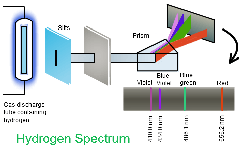

Atomic spectra#
What you need to know
Atomic spectroscopy measures frequencies or wavelengths of radiation absorbed or emitted by atoms.
Spectra of atoms show discrete lines which indicate that atoms absorb or emit only very specific few frequencies
In other words energies of atoms are quantized.
Bohr tried to develop theory to explain spectra of atoms by combining classical mechanics with rules of quantization.
For the simplest H atom Bohr’s theory worked perfectly giving a closed formula which explains all spectral lines of H atom.
Alas for atoms with more than one electron Bohr’s theory fails to generalize which prompted scientist to develop a more rigorous theory fo quantum Mechanics

When heated or subjected to electrical discharge, atoms emit radiation of characteristic frequencies. The spectrum from each atom is unique. These discrete emitted frequencies comprise a stick spectrum such as the one shown above.
H atom spectra#

These stick spectra are clearly impossible to describe with classical mechanics. In 1885, Johann Blamer demonstrated that a subset of the hydrogen atom spectrum (the Balmer series) could be described by the equation
where \(n=3,4,5,...\). Later, Johannes Rydberg generalized this formula to account for the entire hydrogen atom spectrum yielding the Rydberg formula
where
\(R_H = 109677.581\) cm\(^{-1}\) is the Rydberg constant
\(n_1 = 1,2,3,...\), and \(n_2 = n_1+1,n_1+2,...\).
While these equations fit the hydrogen atom spectrum nicely, they do not prescribe any physics to the system. They do not present a model of the hydrogen atom but rather a heuristic equation that fits the data. Nonetheless, scientists were perplexed by the presence of the integers \(n_1\) and \(n_2\).
Bohr model of H atom#
In 1911, Niels Bohr proposed a model for the hydrogen atom that was able to recapitulate the hydrogen atom spectrum.
The model consists of an electron orbiting a proton in circular orbits. The proton is considered to be fixed in space because it is so much more massive than the electron.
Most importantly Bohr had to introduce new ad-hoc requirements to keep the electron stable. Namely the electron demonstrates wavelike characteristics which has an integer number \(n=1,2,3,...\) of modes around the circular orbit.
Thanks to this quantization rule expression for the H atom energy is obtained which is a function of an integer number \(n=1,2,3,...\)
Quantizes states of electron#
Restricitng waves with wavelength \(\lambda\) to sit around orbit separated by integer number yields

where \(\lambda_e\) is the deBroglie wavelength of an electron and can be written as
Plugging the deBroglie wavelength equation into the circular wave equation yields
where we have introduce \(\hbar = \frac{h}{2\pi}\) as a short-hand because it comes up frequently in quantum mechanics. The term on the left-hand side of the last equation, \(m_evr\), is the angular momentum of the electron. Thus Bohr ‘s model demonstrates a quantization of the angular momentum of the electron.
Force balance#
After introducing ad-hoc quantization rule, Bohr’s model then resorts to lclassical mechanics to obtain energy function.
Bohr posited that for stationary states of the electron the electrostatic force between the proton and electron,
where \(4\pi\varepsilon_0\) is present to achieve SI units, must be equal to the centrifugal force,
where \(m_e\) is the mass and \(v\) is the velocity of the electron. Equating these two forces yields
The combination of the force balance equation and the quantized angular momentum equation quantizes the values of \(r\), the radius of the electron’s circular orbit, that can be taken. To demonstrate this we solve the quantized angular momentum equation for \(v\) and plug the result into the force balance equation and solve for \(r\):
The radius of the first Bohr orbit is denoted \(a_0 = \frac{4\pi\varepsilon_0\hbar^2}{e^2m_e}\) or units of Bohr. Allowed values of \(r\) as a function of \(n\) are plotted below.
Energy of H atom#
The energy of the system can is a sum of the Coulomb attraction between the electron and the proton and the kinetic energy of the electron:
To determine the energy of an electron that is limited to be in the circular wavelike orbits described above, we must use the force balance relationship. We do that by substituting \(m_ev^2 = \frac{e^2}{4\pi\varepsilon_0r}\) into the energy equation to yield
where I plugged in the quantized values for \(r\) derived from the for balance relationship.
Taking differences in energy between two energy levels, \(n_1\) and \(n_2>n_1\), yields
Equating this to the frequency (use \(E = h\nu\) and \(\tilde{\nu} = \frac{\nu}{c}\)) of emitted light yields
We see that this yields an expression for the Rydberg constant in terms of fundamental constants
Problems#
Problem 1#
The so-called Lyman series of lines in the emission spectrum of hydrogen corresponds to transitions from various excited states to the n = 1 orbit. Calculate the wavelength of the lowest-energy line in the Lyman series to three significant figures. In what region of the electromagnetic spectrum does it occur?
Solution
A We can use the Rydberg equation to calculate the wavelength for the Lyman series, \(n_1 = 1\).
The lowest energy results from a transition from or to nearest energy level hence \(n_2 = n_1+1\)
Spectroscopists often talk about energy and frequency as equivalent. The \(cm^{-1}\) unit (wavenumbers) is particularly convenient. We can convert the answer in part A to \(cm^{-1}\)
and
This emission line is called Lyman alpha and is the strongest atomic emission line from the sun and drives the chemistry of the upper atmosphere of all the planets producing ions by stripping electrons from atoms and molecules. It is completely absorbed by oxygen in the upper stratosphere, dissociating O2 molecules to O atoms which react with other O2 molecules to form stratospheric ozone
B This wavelength is in the UV region of the spectrum.
Problem 2#
A. Calculate the energy of a photon that is produced when an electron in a hydrogen atom goes from an orbit with n=4 to and orbit with \(n=1\)
B. What happens to the energy of the photon as the initial value of \(n\) approaches infinity?
Solution
A. We will use the Bohr’s formula in units of electron \(E_n = -19.6 \frac{1}{n^}\) to calculate energy of a photon.
B. Energy of a photon goes up as we excite electron to higher and higher level. As \(n_2\rightarrow \infty\) we end up with a photon that has sufficient energy to ionize the atom. \(E = 19.6 \cdot ( \frac{1}{1^2} - \frac{1}{\infty} \Big) = 19.6 ev\)
Problem 3#
Use Rydberg’s formula to calculate firs few lines of Lymann series (\(n_1=1\))
Solution
Problem 4#
A line in the Lymann series of hydrogen has a wavelength of \(1.03 \cdot 10^{-7} m\) Find the original level of the electron.
Solution
Problem 5#
Using Bohr theory calculate ionization energy of singly ionized helium \(He^{+}\)
Solution
Problem 6#
Calculate radii of Bohr orbit for first few levels. Using python plot \(r_n\) vs \(n\)